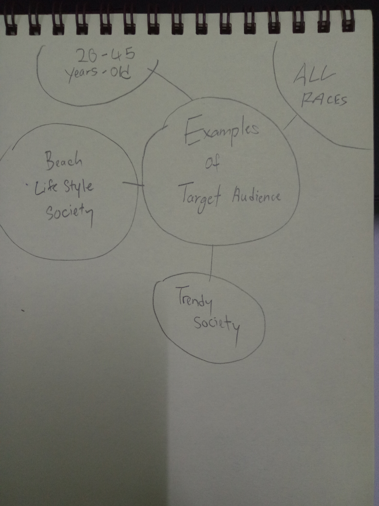
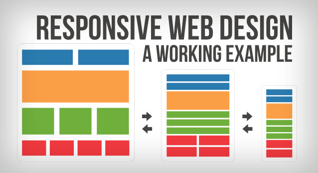
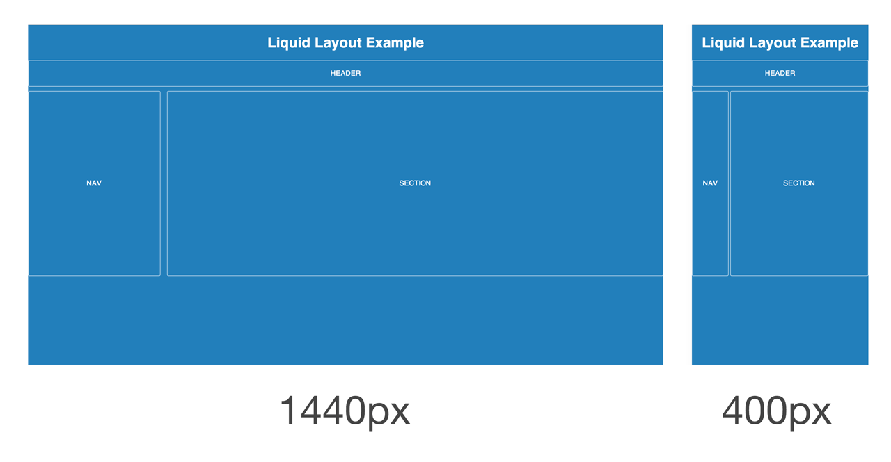
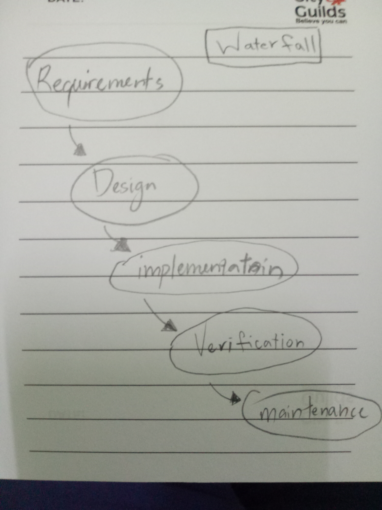
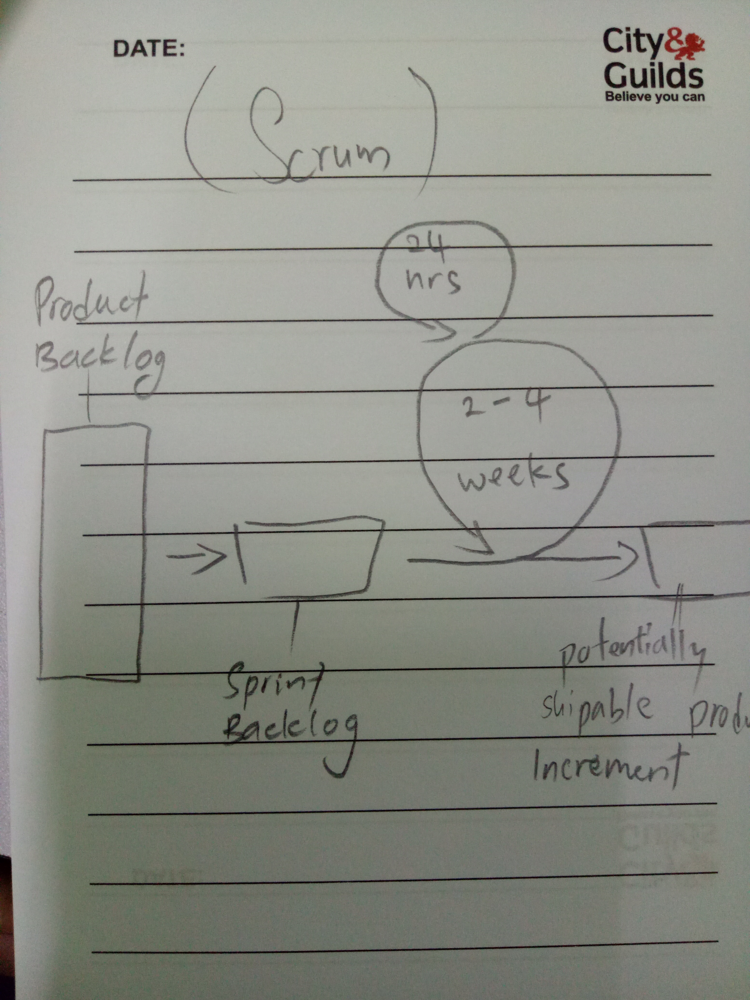
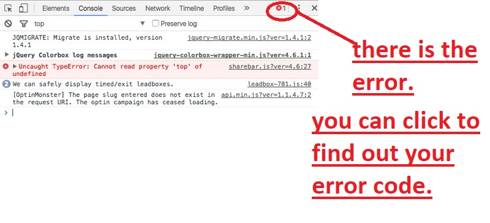

In the age of internet, personal computer, laptop and mobile devices are become our mostly commmon devices for social media and srufing webpages. As you know, different devices have different screen resolution. In previous webpages are desgined for personal computer so for computer user will not have the problems. Because of different screen resolution, some webpages can't fully displayed for smaller screen device such as mobile phone. For now because of mobile phone have became the common device so that some of the webpages are very responsive that can still display clearly in mobile phone without zoom in.
The significance of the speed of the internet connection between user's devices and the internet is because if downloading different file sizes at the same time might cause slowing down the internet. The speed of the internet basically affected by number of connector, distance between devices and line quality.
The basic main features of a modern web browers was able to search information on WorldWideWeb. Browser is the easiest way to get help from other resources on the Web that can give you helps or anwsers your questions.
In the mordern web browsers, browsers give better performance on loading pages. Beside that, modern web browsers have good security protection, such as parental controls and protect privacy. Next, modern browser are able to add extension on browser such as advertisment block, google docs and others. Modern borwsers capable to support CSS3 and HTML5. This allow web developer to create more advance performance webpages.
Hypertext mark-up language(HTML) is a mark-up language for creating webpages document. The common main features are able to insert images, audios and videos on HTML to interest your webpage. HTML provide elements to have more structure at the interface such as, header, paragraphs, lists, and others. Besides that, HTML attributes usually can add an element after elements such as name or that affect the element simply by their presence in the start tag of the element.
HTML latest version is HTML5, it added many new features. HTML5 are bundle of HTML, CSS and JavaScript, for developer more easy to use and more efficiently on work.
The limitations of HTML are optimizing the interface of webpage. Example, changing the background colour will need CSS to add more style. If open same page with three different browsers, the page might be differently depending on the browser you use Internet Explorer, Google Chrome or Firefox. In this case, those changes are affect the margin between the main content of the website and maybe some tag or property browsers are not supported. In additional, limitation of HTML5 is even it's is a bundle of HTML, CSS, and Java Script for some problems it also need HTML, CSS and Java Script to take rule.
Nowadays, all screen devices are showing images are made by pixels. Pixel is the smallest unit associated with screen-based design, if zoom into the first look are one and zero called binary code. Pixels are importance because now in the era of computer users usually use computer to watch movie, video and picture. Because of this rise, pixels are become more importance which mean resolution. Some games or video need high resolution for good performance, there are several options that pixel is importance. Example for some designer, they will need to produce high resolution images or creating logo. This lead to without pixels they can’t do their job.
The graphics file formats have JPG, GIF and PNG. The advantages of JPG graphic file format that suitable for use in webpage is because the size of file is small allow page load faster. JPG file format is suitable for full colour realistic images with a lot of colour and contrast transitions. Furthermore, this format file is compatible and it is displayed correctly in any browsers, text, computers and mobile devices. The advantages of GIF are they can show emotion and movement which can easily tell what it wants to present. Besides that, GIF support transparent background this allow some situation or make webpage more interactive. PNG advantage is compressed without quality loss, it supports level of transparency and this format usually found on logo images. PNG supports 8-bits and 24-bits contain different number of colours.
There are also have the disadvantages of the format files. When JPG is during compressing the image will degrades its quality. This format does not support transparency if drawing templates or logos. In addition, the disadvantages of GIF have limited colour palette so its look poorer quality than other types of file’s images. Last, PNG disadvantages are doesn’t support animation
The issues of involving copyright are cannot simply being copied by not the owner of that web sources. There are several issues like copy images and copy coding of apps or webpage without authorization will break the fair use laws. Besides that, a webpage or others, not relevant person is not allowed to edit or add information unless is under contract with the copyright. With all these kind of issue, copyright can sue and get repay for the issue.
Viewport is a user's visible area on a webpage. Different devices has different viewport because before mobile and tablet devices, the webpage was designed only for computer screen. In this era, mobile and tablet have been the common devices cause it was easy to carry around. So, viewport tags are the method.
Hypertext Markup Language(HTML) is a set of codes to create structure on the display webpages. HTML can input videos, images and audio. HTML can descirbes the structure of a webpages, structuring are for where its have to end in a paragraph.
Cascading Style Sheets(CSS) is a important role in webpages. CSS is for design webpages layout, colours and fonts, to make webpage more responsive. Besides, CSS able to make a page rendered on different devices and it allows developer to position and reposition the components of a webpage.
JavaScript is a programming language. JavaScript function is to design dynamic content with code.Example like assign a value to variables.
Hexadecimal colours is a six digit combination, represent by red, green and blue components of the colour. One colour represents a number in 00 to FF, means black to colour. For an example #ffff00 is displayed as yellow.
EXAMPLE:
Nowadays, there are tons of websites with different function such as blog website, business website, eCommerce and others. These websites are different category.
First, blog. Blog website is type of social and also like diary, you can upload anything to your page. For example, information about something, daily lifestyle or as a forum to discuss. This type of website speacially are for teenagers cause most of the teen like to share about their experience and lifestyle.
Second, business website. Business websites function is to presents a product of a company. To understanding the product, visitor can find out through the website.
Third, eCommerce websites are for online shopper. This kind of websites allow user to buy or sell through the internet. Buyer can transmit the cash on the website and seller just have to upload their product and set price. Ecommerce websites makes users more convenient, this way save a lot of times.
Target audience is the person who is interested in our product, service or is a specific group of people within is the target of market, published readers are also means target audience.
House style means to have own stylistic on a product or other creation. For example, a company have their own logo to help customers to recognise the brand or consistent use of text type, graphics, colours and many thooughout of work.
Nowadays, many websites have different layout styles. Most common layout style are responsive, liquid layout and others. Responsive layout, this layout is generally referred to mobile layout, which get expands or contracts in width. If the browser goes beyond the width as defined by media query breakpont, then page layout will change drastically to suit a wide or narrow width. Then, Liquid layouts make it easier to design content for multiple page sizes, orientations, or devices. Apply liquid page rules to determine how objects on a page are suited when you create the size, orientation, or aspect ratio.
 Modern project managers usually used common development methodogies such as Scrum and Waterfall, these have their advantages and also disavantages.
First, Waterfall is the most common methodology used because it is simple, easy to understand and use. The advantages of Waterfall is for some inflexible project in each phase has specific information to deliver and review process. Waterfall works well for smaller projects because it is well to understood. For disadvantages, once an application is in the testing stage, it is very difficult to go back and change something and it also uncertainty or complex. Besides that, Waterfall is not recommended for long continous project.
Next is Scrum, it is the most ensures effectvie use of time and money because time and money can be categories so that project manageable to sprints. In addtion, the team gets clear visibility through scrum meetings by standing up and gather in a circle. So that they catch up to each other and solving confusing and misunderstanding. Scrum also has few disadvantages, daily meetings sometimes are burden on members because members also have thier own things to do. For some reason most worry is member leaves the project in the middle, this bring huge negative affect on the project.
In certain project, is needed propose tools such as Github. Github is a version control system which means when developers are creating something, that is able to make changes and releasing new version. Github can do communication during requirement gathering phase，makes lot easier to do discussion just on Github. So that members will not miss any important information.
Readability codes are importance in many way for software developer because if the code is easy to read, it will be easy to understand which makes it easy to debug, maintain and extend. The most common technique of making your code more readable is consistency. Consistency means in coding is style, shape, naming conventions and structure. The structure of the code should be the same between plugins, so when you are debugging and reading those plugins you can easily spot them out.
Modern coding guides for web pages development is for programmer to be more effectively when coding. When a huge project to development, modern coding ways is effectively helps in many way such as readability. When other developers are modifying or debugging the modern coding ways save their times to search, so that a project will go more successfully.
My favourites coding guide is using tab button. When I'm entering the plugins, I'll use tab to make plugins to stay at the same line and using tab save my times. If i want to refer back my code it would easy to find out because the lineup are clearly showed.
The common tools used to debug CSS or HTML problems is inspect from Google Chrome. You can find it at Google Chrome browser, right click on the webpage and u can see inspect. Inspect is allow you to directlly change code and see the result, so that you don't need to go back to your html code make changes then save to see the result. When your code doesn't work on page, inspect element will show you wheres the problem so that you can easily check out.
Version control tools is type of communication, but it got other functions. Version control tools can start a project or a repository, a team can be easily dicuss or solve problems. Thess tools can help a team collaboration on a project. For example, when all members are rewriting the code of project. The code file will be recorded by date and time so that other members can check back at the history, won't missed any information. If the codes is rewriting at the same times by members, version control will avoid the not matching up codes if the codes is fixed. Version control in a project does have many branches, so if a branch have problems it won't affect the project so won't have any argument. Version control bring many benefits for team collaboration.
CSS framework have the benefits for developers. Bootstrap is one of the CSS framework, the benefits are easy to use just have to embed the code to your css. Besides that, it is reponsively on page because mobile devices persist to grow hugely popular. Next, web developers can make a choice to select the aspects which are required, which can be simply complete by utilizing Bootstrap customize page. CSS framework are for standard webpage so that some developers no need to code all the structure everytime.
Automated testing of HTML or CSS is to makes things easy. Manually running tests on several browsers is time consuming, with automated test should make works efficiently. Automated test is for you to test your code in automated so that you'll have more time to fix the automated tested problems.
User agent is a string which let websites identify your browser type, operating system, security settings. User agent is act as middle person it helps in accesses. Visiting websites of version of relevant program like media or JavaScript can get through by user agent.
One of the factors that affect the file size of an image is file compression. File compression is to make the file smaller, it is the process of reducing the size of a file. Compression can be lossy or lossless. Lossless means the file size is compressed but the picture quality remains the same. Lossy means the compression will lost data.
Advantages of PNG over GIF, transparency. In GIF file, only one colour is transparent colour. GIF files will producing halo effects when user used differrent background colours that are differrent from the halo effect colours. Then, PNG file have stronger transparency support, with an 8-bit alpha mask. PNG file format also supports full alpha transparency, allowing you to create graphics with different levels of transparency.
The common methods to optimise images is compression. Comperssion is to make file smaller ,so that user can speed up to load a page and makes download times shorter. This method can optimise image file and other big file so when other user want to download it would be easy.
Web server and browser interaction is request and response. Web server is a database, user will use browser requests data from web server. Then, the web server will response and find the data that requested then send back to browser.
The tool to deploy or update a web site is Github. It can let developers group up and do update of a project or website such as changing code or debugging. Github can make branches so developers can choose which branch to deploy.
A web sites can be promoted by SEO, Search Engine Optimization. SEO function is to let user able to search information, SEO makes the search ranking of a keyword. SEO can promote a website to the top of search by a keyword, this allow many user will see your website first when the keyword typed.